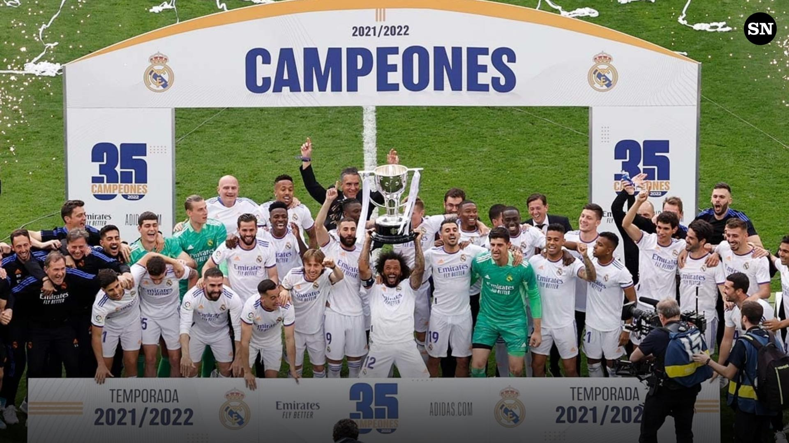
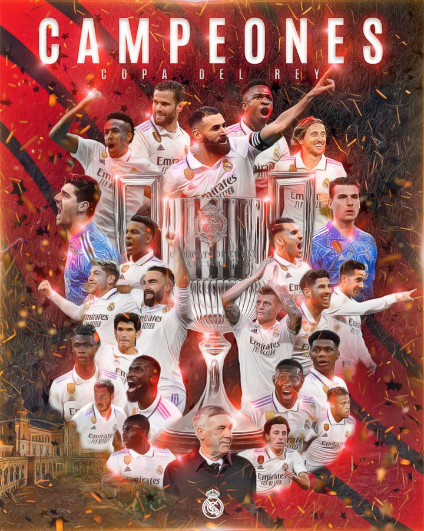
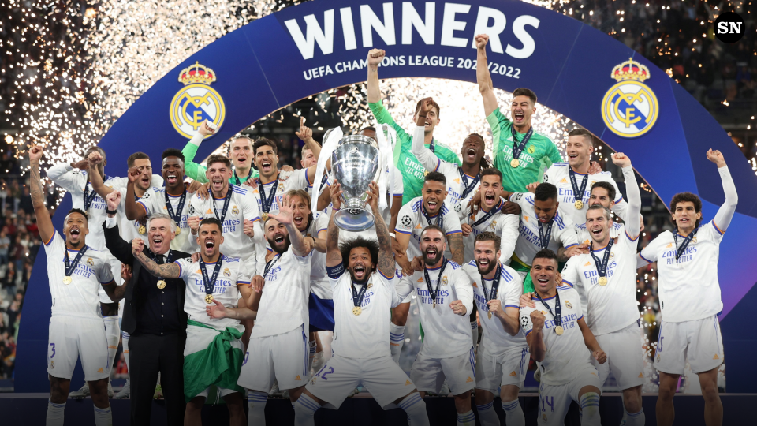

TITULOS DEL REAL MADRID
Liga de España - 35
El Madrid es el club más ganador de la máxima competición española con 35 conquistas, siendo la de la temporada 1931-1932 la primera consagración. El dominio absoluto merengue en la competición se dio con la obtención de dos pentacampeonatos que abarcan los períodos desde 1960-1961 hasta 1964-1965 y desde 1985-1986 hasta 1989-1990.

Copa del Rey - 20
En la segunda competencia en importancia del fútbol español, el Madrid ha disputado un total de 40 finales, en las que se impuso en 20 ocasiones. Es el tercer club más laureado detrás de las 31 conquistas de Barcelona y de las 23 de Athletic Club. La última consagración fue en la temporada 2022-2023, cuando en la final venció 2-1 a Osasuna.

Supercopa de España - 12
El trofeo organizado por la Real Federación Española de Fútbol se disputa desde 1982, originalmente lo protagonizaron los campeones de Liga y Copa, y desde 2020 enfrenta a los dos primeros clasificados de la Liga de Primera División y a los dos finalistas de la Copa del Rey de la temporada anterior.

Copa de Europa / Champions League - 14
El hecho de que el Real Madrid sea 14 veces campeón del máximo certamen europeo a nivel de clubes, el torneo con más prestigio del Mundo, convierte al club en lo que es, además de ser una de las principales demostraciones de su absoluta grandeza. Creada como Copa de Europa en la temporada 1955-1956 y rebautizada como Liga de Campeones desde la edición 1992-1993, ha tenido al Madrid como dominador exclusivo en las cinco primeras ediciones (desde 1955-1956 hasta 1959-1060) y con un tricampeonato reciente (2015-2016 hasta 2017-2018) que pareciera muy difícil de emular.
